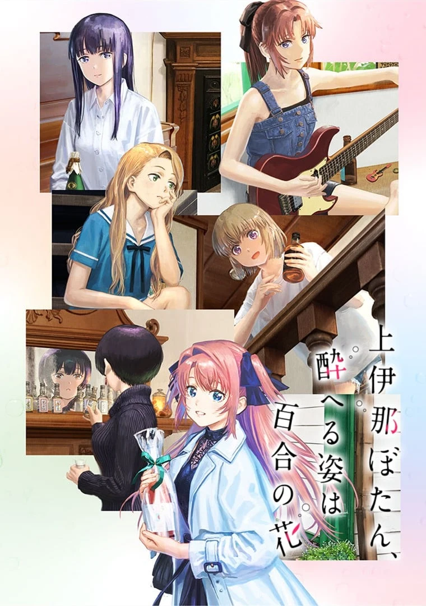

COMPLETE RECORD · Pages 轻量资料
上伊那牡丹,酒醉身姿似百合花般
上伊那ぼたん、酔へる姿は百合の花
别名
- 上伊那牡丹,醉姿如百合
- Kamiina Botan, the Drunken Appearance Is a Lily Flower
- Kamiina Botan, Yoeru Sugata wa Yuri no Hana
- 形式
- TV
- 首播
- 2026-04-10
- 集数
- 12 集
- 评分
- 7.2
- 评分人数
- 8124
SYNOPSIS
简介
上伊那牡丹在升上大学后住进了学生宿舍。 当她与宿舍成员一同前往秩父参加芝樱祭时，在长椅上看见了独自喝着酒的舍监・砺波伊吹。 伊吹那副把Highball喝得格外美味的模样吸引了牡丹，让她忍不住心想：「我也想喝喝看。」于是，她人生第一次尝试了喝酒。 在体会到酒的美味后，牡丹开始和宿舍的伙伴们一起享受烧酒、葡萄酒、威士忌等各式酒类，感情也逐渐加深。 另一方面，因过去的经历而执着于「一个人喝酒」的伊吹，在与总是开心、看起来喝得很满足的牡丹相处的过程中，也逐渐开始想和她一起喝酒……
[简介原文] 大学進学を機に学生寮に入寮した上伊那ぼたん。 寮のメンバーと訪れた秩父・芝桜まつりのベンチでひとり、お酒を飲む寮長・砺波いぶきを見つける。 ぼたんは、ハイボールをあまりに美味しそうに飲むいぶきに惹かれ「私もそれ、飲んでみたいな」と人生で初めてのお酒を口にすることに。 そこでお酒の美味しさを知ったぼたんは、一緒に暮らす寮生たちと焼酎・ワイン・ウイスキーなど様々なお酒を楽しみ、関係を深めていく。 一方、過去の苦い経験から“一人飲み”にこだわっていたいぶきも、楽しげで美味しそうにお酒を飲むぼたんと過ごすうちに、一緒にお酒を飲みたいと考えるようになり……。
EPISODE LOG
正片章节
已收录 12 条正片章节
- 1第1話 首播：2026-04-10时长：24 分钟
- 2第2話 首播：2026-04-17时长：24 分钟
- 3第3話 首播：2026-04-24时长：24 分钟
- 4第4話 首播：2026-05-01时长：24 分钟
- 5第5話 首播：2026-05-08时长：24 分钟
- 6第6話 首播：2026-05-15时长：24 分钟
- 7第7話 首播：2026-05-22时长：24 分钟
- 8第8話 首播：2026-05-29时长：24 分钟
- 9第9話 首播：2026-06-05时长：24 分钟
- 10第10話 首播：2026-06-12时长：24 分钟
- 11第11話 首播：2026-06-19时长：24 分钟
- 12第12話 首播：2026-06-26时长：25 分钟